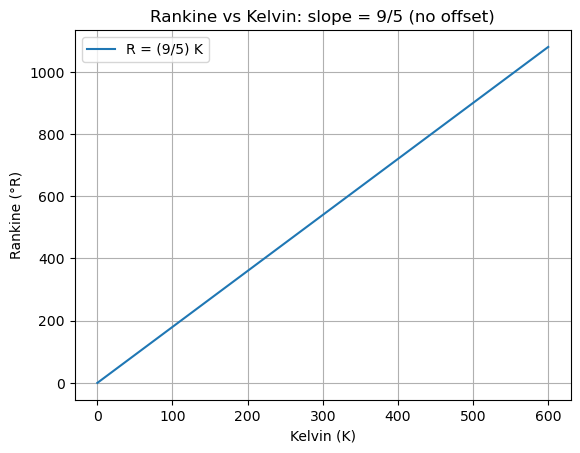
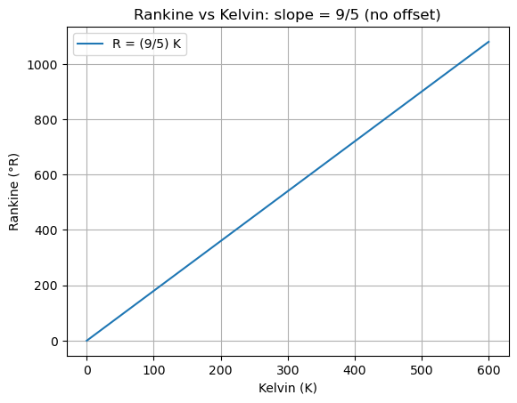

D7.1 Temperature#
D7.1.1 Motivation#
In everyday life, we constantly describe objects as hot or cold. However, these sensations are not direct measures of temperature.
Instead, they reflect the rate of energy transfer between our body and the environment:
An object that feels “cold” is usually one that draws energy away from our skin quickly.
An object that feels “warm” transfers energy into our skin at a faster rate.
Because people have different sensitivities, the same object may feel “warm” to one person and “neutral” to another. This means that hot and cold are subjective experiences, not universal quantities.
To overcome this subjectivity, scientists introduced the concept of temperature as a human-made standard. Temperature provides a reproducible, numerical way to compare thermal states of systems, independent of individual sensation. It allows us to move from personal impressions to objective measurements, enabling the development of thermodynamics, engines, and modern technology.
D7.1.2 Conceptual Definition#
From the perspective of statistical physics, temperature is related to the average kinetic energy associated with microscopic degrees of freedom in a system. While the microscopic details require more advanced theory than Phase D allows (we will wait until Phase A), conceptually we can think of temperature as:
A measure of how energetic the microscopic motion of particles is.
A property that determines the direction of heat transfer: heat flows spontaneously from higher to lower temperature.
A variable that allows us to compare systems in thermal equilibrium.
Thus, temperature is not “heat” itself, but a property that governs thermal interactions.
It is important to distinguish:
Temperature: a property indicating thermal state
Heat: energy transferred due to a temperature difference
Internal energy: energy stored within a system
In Phase D, temperature is treated as a measurable macroscopic variable; its precise microscopic definition will be developed in later phases.
State variables and process variables#
Some physical quantities depend only on the current state of a system, while others depend on the process by which the system changes.
State variables describe the condition of a system at a given moment.
They depend only on the current state, not on how that state was reached.Process variables describe energy transfer or change during an interaction.
Their values depend on the specific path or process taken.
In thermodynamics:
Temperature and internal energy are state variables.
Heat and work are process variables.
This distinction is essential for understanding thermodynamics: systems have well-defined states, while heat and work describe how systems move between states.
Concept — Zeroth Law of Thermodynamics
If two systems are each in thermal equilibrium with a third system, then they are in thermal equilibrium with each other.
This principle allows temperature to be defined as a meaningful physical quantity.
It ensures that temperature comparisons are consistent and transitive, making thermometers possible.
Because temperature depends only on the state of a system and not on how that state was reached, it is a state variable.
D7.1.3 Temperature Scales#
The history of temperature scales reflects both scientific discovery and human ingenuity.
In 1724, Daniel Gabriel Fahrenheit, a Polish–German physicist and instrument maker, sought to create a practical and reproducible thermometer. He based his scale on three fixed points: the lowest temperature he could reproducibly achieve in his laboratory (a mixture of ice, water, and salt), the freezing point of pure water, and the boiling point of water. On his scale, the ice–salt mixture defined \(0^\circ \mathrm{F}\), water froze at \(32^\circ \mathrm{F}\), and water boiled at \(212^\circ \mathrm{F}\). The system may seem unusual today, but it was designed to avoid negative numbers for everyday weather and to fit within the mechanical precision of early thermometers. The Fahrenheit scale became standard in England and its colonies, which is why it persists in the United States today.
Only a few decades later, in 1742, the Swedish astronomer Anders Celsius proposed a competing scale. He originally set \(0^\circ \mathrm{C}\) at the boiling point of water and \(100^\circ \mathrm{C}\) at the freezing point—a reverse of today’s convention. Shortly after his death, the scale was inverted by Carl Linnaeus and others to the more intuitive modern version: \(0^\circ \mathrm{C}\) for freezing and \(100^\circ \mathrm{C}\) for boiling, at standard atmospheric pressure. Because it was simpler and aligned with the metric system, the Celsius scale spread widely across Europe and, eventually, most of the world.
By the mid-19th century, advances in thermodynamics called for a more fundamental reference point. The Scottish physicist William Thomson, later known as Lord Kelvin, argued that temperature should be defined relative to absolute zero, the theoretical limit where molecular motion ceases. In 1848 he proposed the Kelvin scale, with \(0 \, \mathrm{K} = -273.15^\circ \mathrm{C}\). Unlike Celsius or Fahrenheit, Kelvin is not tied to the properties of water but to the underlying physics of matter. Today it is the standard unit of temperature in the International System (SI).
A few years later, in 1859, the Scottish engineer William John Macquorn Rankine extended Kelvin’s idea but kept the Fahrenheit degree size, creating the Rankine scale. For engineers in the United States—who were already accustomed to Fahrenheit—this allowed absolute temperature calculations without switching unit sizes. Although Rankine is rarely encountered outside of certain engineering contexts, it remains historically significant as part of the effort to standardize thermodynamics.
Celsius (°C)#
Origin: Defined relative to the freezing point (0°C) and boiling point (100°C) of water at standard atmospheric pressure.
Commonly used worldwide for daily life, weather, and science (outside the U.S.).
Fahrenheit (°F)#
Origin: Defined so that 32°F is the freezing point of water and 212°F is the boiling point of water at standard atmospheric pressure.
Historically based on mixtures of water, ice, and salts.
Commonly used in the United States for weather, cooking, and daily life.
Kelvin (K)#
Origin: Absolute scale starting at absolute zero, the theoretical limit where average thermal motion is minimized and where it is no longer possible to remove energy from the system in the form of heat, even though microscopic motion does not literally vanish.
1 K = 1 °C (same unit size), but shifted so that 0 K = -273.15°C.
Used universally in science and engineering, since it is directly tied to fundamental physics.
Rankine (°R)#
Origin: An absolute scale similar to Kelvin but using Fahrenheit-sized degrees.
0 R = absolute zero, and 1 R = 1 °F.
Primarily used in certain U.S. engineering fields (thermodynamics, aerospace).
D7.1.4 Conversion Formulas#
Why the formulas are linear#
Any two temperature scales that each assign numbers to the same physical state (e.g., freezing and boiling of water) must be related by a linear function:
because equal increments on one scale must correspond to equal increments on the other (no stretching that depends on position), and there may be an offset.
Fahrenheit–Celsius#
Use the two fixed points for water at standard atmospheric pressure:
Freezing: \(0^\circ\mathrm{C} \leftrightarrow 32^\circ\mathrm{F}\)
Boiling: \(100^\circ\mathrm{C} \leftrightarrow 212^\circ\mathrm{F}\)
Let \(T_F = a\,T_C + b\).
From freezing:
From boiling:
So the mapping is
Differences vs. absolute readings#
Taking differences (subtract two temperatures so the offset \(b\) cancels),
Hence, a change of \(1^\circ\)C corresponds to a change of \(1.8^\circ\)F, and conversely a change of \(1^\circ\)F corresponds to \(\tfrac{5}{9}^\circ\)C. This is why “how many degrees” something changed depends on the chosen scale.
Kelvin–Celsius#
Kelvin is an absolute scale with the same unit size as Celsius:
So a \(1\) K change is identical to a \(1^\circ\)C change (they differ only by a fixed offset).
Rankine–Fahrenheit#
Rankine is the absolute counterpart to Fahrenheit:
Thus a \(1^\circ\)R change equals a \(1^\circ\)F change (again, unit size same; only the zero is shifted to absolute zero).
Kelvin–Rankine directly#
Because both start at absolute zero and use different unit sizes,
Takeaways#
Linear maps connect temperature scales; they have a slope (unit-size ratio) and possibly an intercept (zero-point offset).
Offsets matter for absolute readings (e.g., \(32^\circ\)F vs. \(0^\circ\)C), but not for differences (the \(+32\) drops out).
Unit sizes: \(1^\circ\)C \(=\) \(1\) K; \(1^\circ\)F \(=\) \(1^\circ\)R; and \(1^\circ\)C \(=\) \(1.8^\circ\)F.
Difference conversions:
ΔC = 1° -> ΔF = 1.8°
ΔC = 5° -> ΔF = 9.0°
ΔC = 10° -> ΔF = 18.0°
Kelvin–Rankine difference conversions:
ΔK = 1 -> ΔR = 1.8
ΔK = 5 -> ΔR = 9.0
ΔK = 10 -> ΔR = 18.0
 

Example — Thermal Equilibrium and Temperature as a State Variable
Consider three systems:
A metal block A
A wooden block B
A thermometer T
Initially, the thermometer is placed in contact with block A. After sufficient time, no net heat transfer is observed between A and T.
The thermometer is then placed in contact with block B, and again no net heat transfer is observed.
Interpretation
Because block A and the thermometer T are in thermal equilibrium, they share the same temperature.
Likewise, because block B and the thermometer T are also in thermal equilibrium, they share the same temperature.
By the Zeroth Law of Thermodynamics, it follows that blocks A and B must be in thermal equilibrium with each other, even if they are never placed in direct contact.
Although the metal block may feel colder than the wooden block when touched, this sensation reflects the rate of heat transfer, not the temperature itself. The thermometer provides an objective comparison that depends only on the thermal state of each system.
Key takeaway
Temperature is a state variable: it depends only on the current thermal state of a system, not on the material or the path by which that state was reached.
Human sensation can be misleading, but thermal equilibrium provides a consistent and reproducible definition of temperature.
Example — Comparing Temperatures Across Different Scales
A laboratory sample has a temperature of
A second sample is reported to have a temperature of
A student wonders whether the two samples are at the same temperature, since the numerical values are different.
Interpretation
To compare the thermal states of the two samples, the temperatures must be expressed on the same scale. Converting the Celsius temperature to Fahrenheit,
The two temperatures represent the same physical state, even though the numbers appear different. If the samples were placed in thermal contact, no net heat transfer would occur once equilibrium is reached.
The numerical difference arises solely from the choice of temperature scale, not from a difference in thermal energy or heat content.
Key takeaway
Temperature scales are related by linear transformations.
Different numerical values can describe the same thermal state, and temperature comparisons must always be made using a common scale.
Box Activity 1 — Temperature Differences Across Scales
In this activity, you will practice interpreting temperature differences and comparing them across different temperature scales.
Task:
A metal rod is initially at a temperature of
The rod is then heated until its final temperature is
Answer the following questions.
Determine the temperature change \(\Delta T\) in degrees Celsius.
Express the same temperature change \(\Delta T\) in kelvins.
Express the same temperature change \(\Delta T\) in degrees Fahrenheit.
Explain why the numerical value of a temperature change depends on the chosen scale, even though the physical change is the same.
Explain why temperature differences, rather than absolute temperatures, are often used in thermal expansion and heat transfer calculations.
A Possible Solution Guide
Key idea
Temperature scales are related by linear mappings.
For temperature differences, the offset between scales cancels out, leaving only the unit-size conversion.
Step 1: Temperature change in Celsius
The temperature change is
Step 2: Temperature change in kelvins
Because the Kelvin and Celsius scales have the same unit size,
Step 3: Temperature change in Fahrenheit
Temperature differences convert using only the slope of the linear mapping:
Step 4: Interpretation
The physical temperature change of the rod is the same in all cases.
Different numerical values arise solely from the choice of scale, not from a difference in thermal behavior.
Step 5: Why temperature differences matter
Many thermal effects—such as thermal expansion and heat transfer—depend on how much the temperature changes, not on the absolute temperature itself.
Using temperature differences ensures that calculations reflect the actual physical change, independent of the chosen scale.
Box Activity 2 — Temperature Differences Using the Rankine Scale
In this activity, you will practice interpreting temperature differences using the Rankine scale, which is commonly used in U.S. engineering fields such as thermodynamics and aerospace engineering.
Task:
An aircraft engine operating at cruise conditions has an inlet air temperature of
During engine operation, the air temperature inside the compressor increases to
Answer the following questions.
Determine the temperature change \(\Delta T\) in degrees Rankine.
Express the same temperature change \(\Delta T\) in degrees Fahrenheit.
Express the same temperature change \(\Delta T\) in kelvins.
Explain why Rankine is convenient for engineering calculations involving temperature differences.
Explain why absolute temperature scales are preferred in thermodynamic analysis.
A Possible Solution Guide
Key idea
Rankine is an absolute temperature scale that uses Fahrenheit-sized degrees.
For temperature differences, Rankine and Fahrenheit have the same unit size, while Kelvin and Celsius share a different unit size.
Step 1: Temperature change in Rankine
The temperature change is
Step 2: Temperature change in Fahrenheit
Because Rankine and Fahrenheit degrees have the same size,
Step 3: Temperature change in kelvins
Convert using the ratio of unit sizes between Rankine and Kelvin:
Step 4: Why Rankine is convenient
In many U.S. engineering applications, temperatures are historically measured in Fahrenheit.
Using Rankine allows engineers to work with an absolute temperature scale without changing unit size, simplifying energy and efficiency calculations.
Step 5: Why absolute scales matter
Thermodynamic relations often involve ratios or products of temperature, which require an absolute zero reference.
Absolute scales such as Kelvin and Rankine ensure that these calculations reflect physical reality, not arbitrary zero points.
D7.1.5 Summary#
Temperature provides a quantitative measure of hotness.
It determines the direction of heat flow.
Different scales exist due to historical and practical reasons, but all are interconvertible.
For scientific work, the Kelvin scale is the standard.